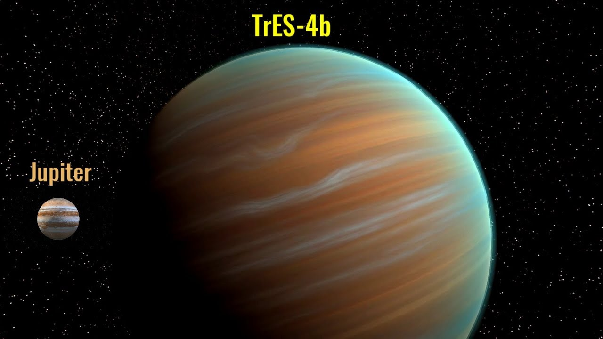
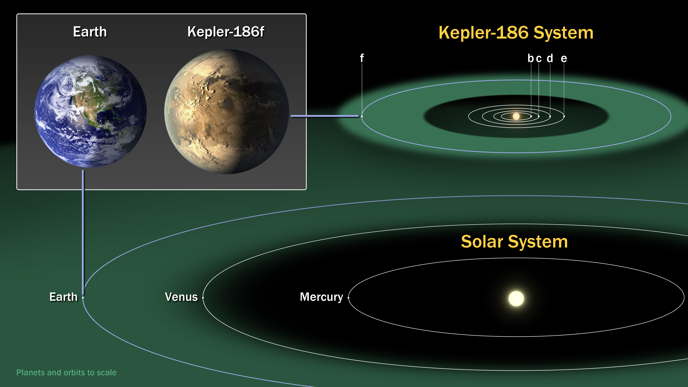
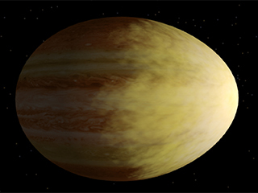

Table Of Contents
What Are Planets?
Planets are large celestial bodies that orbit around a star and do not produce their own light. They are typically spherical in shape and have cleared their orbits of other debris, distinguishing them from other objects in the solar system such as asteroids and comets. There are eight planets in our solar system: Mercury, Venus, Earth, Mars, Jupiter, Saturn, Uranus, and Neptune. These planets vary in size, composition, and other characteristics, and each one has its own unique features and qualities. Planets are of great interest to scientists as they offer insights into the formation and evolution of our solar system, as well as the potential for finding extraterrestrial life.
Planets From Our Solar System
These planets are in order from closest to farthest from the sun in their orbits.
- Mercury

- Venus

- Earth

- Mars

- Jupiter

- Saturn

- Uranus

- Neptune

Now you may notice Pluto is not here. That is because it is classified as a dwarf planet.
Interesting Planets
- The largest planet known to mankind, trES-4b
- The most similar planet to Earth, Kepler 186f
- One of the hottest planets known to man and also shaped like an egg, WASP-12b
 One of the most diamond-rich planets discovered so far, with up to a third of its mass made up of diamond, 55 Cancri e
One of the most diamond-rich planets discovered so far, with up to a third of its mass made up of diamond, 55 Cancri e
How Do Planets Form?
Planets form from the gas and dust in a rotating disk around a young star. The dust grains stick together to form pebbles, which in turn collide to form larger bodies called planetesimals. Over time, these planetesimals grow through additional collisions and gravitational attraction, eventually becoming large enough to clear their orbits and become planets. The exact details of this process depend on various factors, such as the composition of the disk, the temperature, and the distance from the star.
Top Of The Page